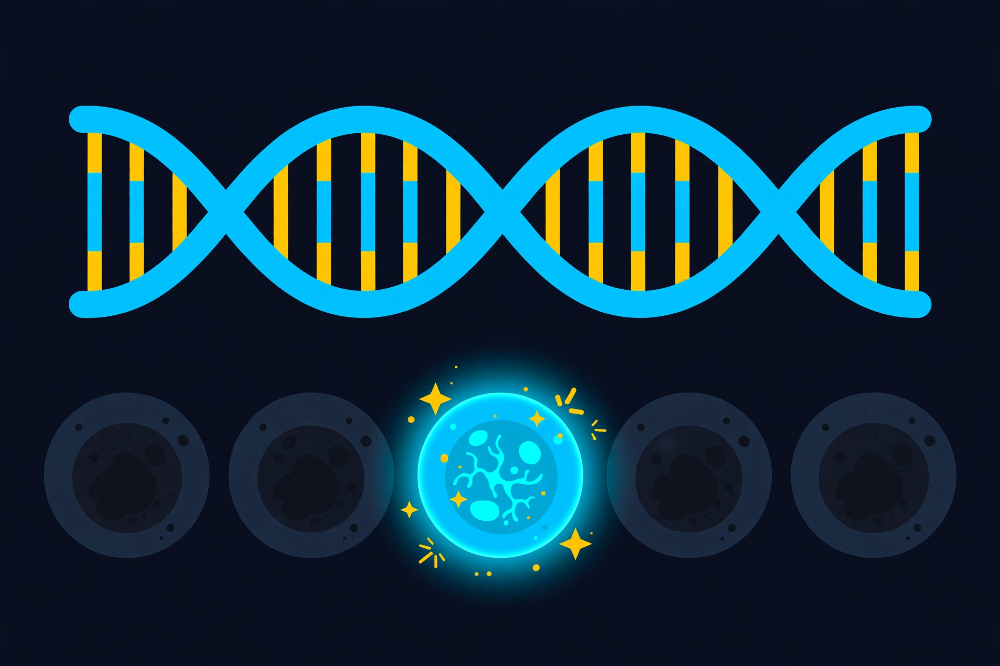

How AI Reads DNA, Explained: AlphaGenome 2 and the Cell-by-Cell Map of Disease
Every cell in your body carries the same DNA, yet a heart cell and an immune cell read it differently. Here is the AI model that predicts which cell a genetic variant will affect — and why that matters for finding the causes of disease.

1 What it is
Your body has about thirty-seven trillion cells, and almost every one of them carries the same DNA — the same three-billion-letter instruction book. Yet a heart muscle cell and an immune cell do completely different jobs, because each cell type reads that book differently, switching some genes on and others off. Most of the genetic variants linked to disease do not sit inside genes at all: they sit in the switches around them, and they usually matter in only one kind of cell.
That is the problem AlphaGenome 2 is built to solve. Announced by Google DeepMind on November 11, 2026, it is a DNA sequence model that predicts how a genetic variant changes gene activity in a specific human cell type or cell state — a gut immune cell, a maturing red blood cell, an activated T cell — rather than in a tissue average. Its predecessor, AlphaGenome, launched last year, predicted variant effects across broad tissues. The new model zooms in from the tissue to the cell.
Think of it this way. The old model could tell you a variant probably matters somewhere in the liver. The new model can tell you it matters in one particular kind of liver cell, turns one particular gene up, and leaves the neighbouring cells alone. For a scientist hunting the cause of a disease, that is the difference between a suspect list and an address.
2 How it works: the loop
AlphaGenome 2 works as a loop, and the loop is the whole trick:
1. Input — the model takes a DNA sequence of up to a million letters, plus one biological condition: a tissue, a cell type, or a cell state, chosen from a reference catalogue or built from a scientist’s own single-cell experiment. 2. Predict — it predicts how that DNA is read in that condition. 3. Readouts — the predictions cover gene expression, chromatin accessibility, histone modifications, and DNA methylation, a new readout in this version. 4. Compare — swap one letter of DNA for a variant, run it again, and see what moved. If a gene’s activity jumps in gut immune cells but not in heart cells, you have found where the variant acts.
The design change from the first AlphaGenome is the key idea. The original model predicted thousands of tissue outputs in parallel, all at once — efficient, but it spread the model’s capacity thin and blurred the differences between closely related cell types. AlphaGenome 2 is a conditional model: it predicts one condition at a time, and it feeds that condition into every stage of its architecture alongside the DNA. The same stretch of DNA is read differently in different cells, and the model is built to learn exactly that.
Training drew on bulk and single-cell data from human and mouse samples, including more than 107 million individual cell profiles across 68 tissues. And the model can generalise to cell states it has never seen: a scientist can upload a single-cell snapshot of gene activity from just a few dozen cells, and AlphaGenome 2 conditions on that state without retraining — even matching or beating models trained directly on those datasets.
3 DNA prediction vs a GWAS vs a cell atlas
A genome-wide association study, a GWAS, scans thousands of people’s DNA and flags broad stretches linked to a disease — but it cannot usually say which exact variant, which gene, or which cell type is responsible. It gives you a neighbourhood, not an address.
A cell atlas, like the Human Cell Atlas, maps which genes are switched on in millions of real cells. It tells you what is happening in each cell type, but it is a snapshot: it cannot tell you what would happen if one letter of DNA changed.
AlphaGenome 2 is the third thing: it turns the static atlas into a predictive engine. Give it a variant and a cell type, and it predicts the effect — including for cell states nobody has measured yet. DeepMind precomputed predictions for trait-associated variants across hundreds of human cell and tissue conditions, so researchers can look up a variant and see the likely cell and gene without running the computation themselves.
4 Why everyone’s building it now
The news peg is the launch itself, but the proof is in two examples DeepMind published with it. First, a recent landmark study showed that a variant in a distant regulatory switch drives inflammatory bowel disease by overactivating the ETS2 gene in gut immune cells called macrophages. Making predictions across immune cell types in the gut, AlphaGenome 2 reproduced that finding computationally: it singled out the causal variant and showed it selectively boosts ETS2 in gut macrophages, leaving other cell types and genes largely unaffected.

Second, given unseen single-cell data from a COVID-19 mRNA vaccine study, the model distinguished vaccine-activated immune T cells from resting ones — and revealed that a variant linked to severe COVID-19 disrupts gene activity more strongly when cells are in the activated state, an effect that would be missed entirely in unactivated cells.
The numbers behind the launch: on TenK10K, a large single-cell map of 28 primary immune cell types, AlphaGenome 2 reliably identified nearly twice as many causal variants — 30 percent versus 16 percent — and directional gene effects — 43 percent versus 23 percent — as the original AlphaGenome fine-tuned on single-cell data and other specialised tools. DeepMind also notes the model can fill in missing measurements: give it one readout, like single-cell gene activity, and it can predict unmeasured properties such as chromatin accessibility, helping researchers choose which experiments to run next.
5 The honest part
Here is the honest part, and DeepMind states it plainly. AlphaGenome 2 is for research only and has not been validated or approved for clinical or diagnostic use. Finding a variant’s effect in a cell is not the same as diagnosing a patient or prescribing a treatment, and the reported figures are model evaluations, not evidence of benefit to patients.
The numbers also have honest limits. Thirty percent causal-variant recall is nearly double the comparison — and it still means the model misses seventy percent of causal variants on that test. Predicting an effect is also more expensive in compute than the original AlphaGenome, which stays in service: DeepMind says that cost makes a genome-wide atlas with AlphaGenome 2 impractical, so the precomputed predictions cover trait-associated variants rather than every possible change. And every headline figure is company-reported, from DeepMind’s own evaluations.
So the state of AI-read DNA in 2026 is: the model can now point at the cell where a variant acts, reproduce real disease findings, and generalise to cell states it has never seen — and the gap is everything between a prediction and a patient. That gap is where the science happens next.
Key terms
- Genetic variant A change of one letter in the DNA sequence. Most disease-linked variants sit outside genes, in the switches that control them.
- Enhancer A stretch of DNA that switches a gene on or off, often far away from the gene it controls.
- GWAS A study that scans many people’s DNA to find stretches linked to a trait or disease — a neighbourhood, not an address.
- Cell atlas A map of which genes are switched on in millions of individual cells, cell type by cell type.
- Conditional model A model that takes a condition — here, a cell type or state — as input alongside the DNA, so it predicts one condition at a time.
- Chromatin accessibility How tightly DNA is packed and how accessible it is to the cell’s machinery — one of the readouts AlphaGenome 2 predicts.
This lesson comes from today’s Daily Tech Briefing (Episode 31, November 12, 2026): Nvidia’s board moves to oust Jensen Huang, the Fed warns on AI debt, and DeepMind reads DNA cell by cell. Read the full briefing: Nvidia board moves to oust Huang — Daily Tech Briefing.
Google DeepMind, “AlphaGenome 2: Deciphering how cells read DNA to better understand disease” (November 11, 2026); MLQ, “Google DeepMind releases AlphaGenome 2” (November 11, 2026); DeepMind on the original AlphaGenome (June 2025) and the AlphaGenome Atlas, covering all 9 billion possible single-letter changes in the human genome.